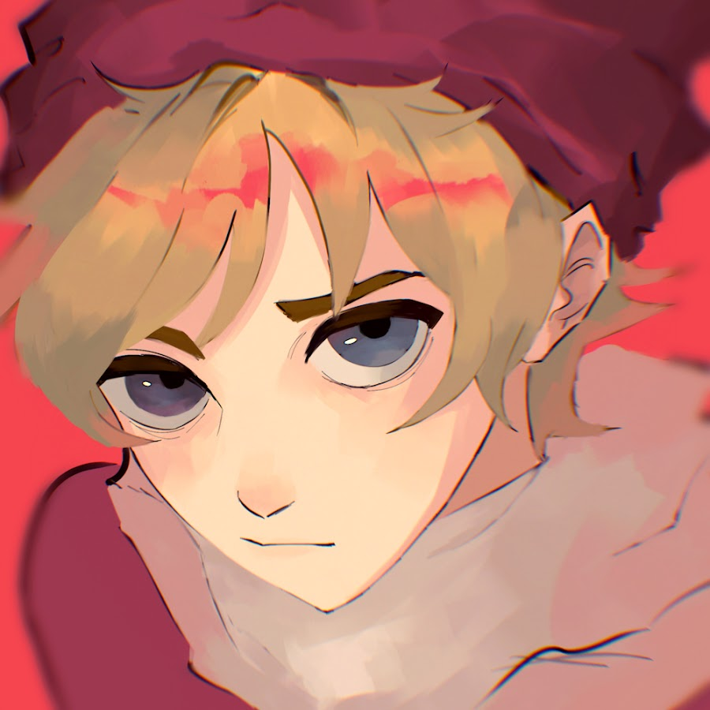
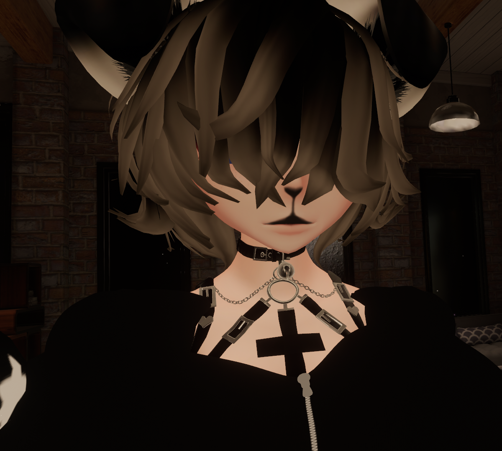

 Eu fiz essa página pois sou apaixonado por esse jogo. Eu o conheci depois de conhecer o youtuber conhecido como Goularte. Na época, eu estava de férias do meu trabalho e acabei aproveitando esse período para ver alguns vídeos no youtube. Foi dessa maneira que eu conheci esse jogo tão querido por mim.
Eu comecei a jogar VRChat em 2018, quando eu já era maior de idade. Naquele momento, eu tinha apenas um notebook que era até que bom e para a minha sorte, VRChat não é um jogo tão pesado assim. A única coisa que realmente era pesado era alguns mapas e avatares que os criadores não otimizavam direito.
Eu conheci muitas pessoas incríveis nesse jogo. Até hoje, eu tenho amizade com algumas pessoas e de vez em quando eu converso com elas.
Eu ainda jogo bastante VRChat e adoro conversar bastante e me divertir com os estrangeiros para treinar o meu inglês. A comunidade brasileira do jogo é ativa mas não chega a ser tão popular quanto a comunidade gringa. No exterior, esse jogo é bem mais conhecido.
 Durante todo esse tempo, eu utilizei diversos avatares para me representar durante o jogo. Atualmente, eu uso um avatar de uma emo puppy girl.
{% endblock %} {% block footer %} {% endblock %}